<<!DOCTYPE html>
<html>
  <head>
    <title>EE568-Selected Topics in Electrical Machines</title>
    <meta http-equiv="Content-Type" content="text/html; charset=UTF-8"/>
    <style type="text/css">
      @import url(http://fonts.googleapis.com/css?family=Yanone+Kaffeesatz);
      @import url(http://fonts.googleapis.com/css?family=Droid+Serif:400,700,400italic);
      @import url(http://fonts.googleapis.com/css?family=Ubuntu+Mono:400,700,400italic);

      body { font-family: 'Droid Serif'; }
      h1, h2, h3 {
        font-family: 'Yanone Kaffeesatz';
        font-weight: normal;
      }
      .remark-code, .remark-inline-code { font-family: 'Ubuntu Mono'; }
    </style>
  </head>
  <body>
    <textarea id="source">

class: center, middle

# EE-568 Selected Topics in Electrical Machines


## Airgap & Mechanical Constraints

## Ozan Keysan

[keysan.me](http://keysan.me)

Office: C-113 <span class="meta">&#8226;</span> Tel: 210 7586


---

# Suitable Airgap
--

### There is not a definite answer
--

### \\(\delta = 0.2 + 0.01 P^{0.4} \\)mm when p=1

### P: power
--

###  \\(\delta = 0.18 + 0.006 P^{0.4} \\)mm  when p > 1
--

### Smallest airgap is 0.2 mm

---
# Suitable Airgap

### For heavy duty motors the gap may be increased by 60 %.
--

### For converter driven motors airgap can be increased by 60 % to reduce rotor surface losses.
--

### For high speed machines increase airgap (eqn. 6.25 of the textbook)
--

### For very large diameter machines airgap is approximate to D/1000.

---
##Ex:

## What should be the suitable airgap if the motor in the previous example (30 kW) is a heavy-duty motor?
--


### \\( \delta= 1.6 \; 0.8 \; 0.006  (30k)^{0.4}=0.88 \approx 0.9mm \\)
---
# Mechanical Constraints

## Tip Speed

### What is the rotational speed of a machine with 0.5m diameter rotor, to reach the tip speed reach to the speed of sound (1 Mach)?
--

### Max allowable tip speed: 75m/s for high-strength non-magnetic alloy sleeves, and 100 m/s for carbon-fiber sleeves

Reading: Section 6.1 of textbook
---
# Mechanical Loadability
--

### Rotor material should withstand centrifugal forces (especially at high speeds).
--

## Centrifugal Stress:

## \\(\sigma\_{mech} = C' \rho  r\_r^2 \Omega^2 \\)

### \\(\Omega\\): Mechanical speed in rad/s
### \\(\rho\\): Density of the material
 
---
## Centrifugal Stress:

## \\(\sigma\_{mech} = C' \rho  r\_r^2 \Omega^2 \\)
--

#### \\(C'= 1\\) for a thin cylinder
--

#### \\(C'= (3+v)/8\\) for a smooth homogenous cylinder
--

#### \\(C'= (3+v)/4\\) for a cylinder with a small bore
--

### \\( v \\): Poisson's ratio
--

### [Poisson's ratio](https://www.youtube.com/watch?v=hBnzrBhnzVo), [deflection of a golf ball](https://www.youtube.com/watch?v=aMqM13EUSKw), [deflection of a face, 2:15](https://www.youtube.com/watch?v=On1CsbTwlDs)
--

### Poisson Ratios of metals: Aluminium=0.34, Steel=0.29, Copper=0.34

---
# Ex. 6.3:

### Calculate the maximum diameter for a smooth steel sylinder having a small bore. The speed is 15.000 rpm. Yield strength is  300 MPa. The density of the material is 7860 kg/m³.

---
# Other Mechanical Constraints

### Bending Modes


---
# Dynamics of Mechanical Systems: Resonance


### [Transfer function and mathematical modelling](https://www.slideshare.net/vishalgohel12195/transfer-function-and-mathematical-modeling)
--

### [Tacoma Bridge](https://www.youtube.com/watch?v=lXyG68_caV4)

### [Forced vibration-1](https://www.youtube.com/watch?v=OaXSmPgl1os), [Resonant Freq.](https://www.youtube.com/watch?v=LV_UuzEznHs)

### [Torsional Resonance](https://www.youtube.com/watch?v=JLY-yQOpL20)
---

# Resonant Modes

### [Cantilever Vibration](https://www.youtube.com/watch?v=lKT3wBIUFhA)

### [Resonant Modes](https://www.youtube.com/watch?v=uWoiMMLIvco)

### [Modal Shapes](https://www.youtube.com/watch?v=kvG7OrjBirI)
### [Modal Shapes](https://www.youtube.com/watch?v=d3U_m-4XOtg)

---
# Critical Speeds

### The rotational speed should be below the critical speed (preferably with a safety factor)
--

### Usually the limiting factor for very high-speed machines:
--

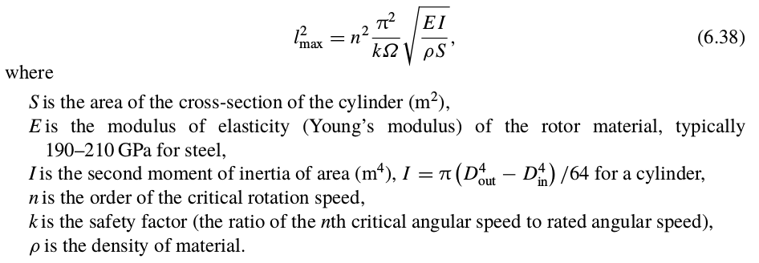

---
# Ex 6.5


### Calculate the max. length with a safety factor k=1.5 for a smooth solid rotor when the rotor diameter is 0.15 m and the rotor speed is 20.000 rpm.

---
# Review: Aspect Ratio
--

## \\(\chi = \dfrac{L'}{D}\\)
---

# Typical Aspect Ratios
--

## Asynchronous Machines:

## \\(\chi \approx \dfrac{\pi}{2p} \sqrt[3]{p}\\\)
--

## Synchronous Machines:

## \\(\chi \approx \dfrac{\pi}{4p} \sqrt{p}\\\)
--


---
# Define \\(D_i\\) and \\(L\\)
--

## Usually \\(0.5 < D_i/L < 2.5\\)
--

## Small diameter for high-speed or servo-type motors, why?
--

### Small inertia,
--

### Low tip speed!
--

### Bending Modes

---

---
# How to define Outer Diameter \\(D_o\\)?
--


---
# How to define \\(D_o\\)?
--

<style type="text/css">
.tg  {border-collapse:collapse;border-spacing:0;border-color:#bbb;margin:0px auto;}
.tg td{font-family:Arial, sans-serif;font-size:32px;padding:10px 5px;border-style:solid;border-width:1px;overflow:hidden;word-break:normal;border-color:#bbb;color:#594F4F;background-color:#E0FFEB;}
.tg th{font-family:Arial, sans-serif;font-size:32px;font-weight:normal;padding:10px 5px;border-style:solid;border-width:1px;overflow:hidden;word-break:normal;border-color:#bbb;color:#493F3F;background-color:#9DE0AD;}
</style>
<table class="tg">
  <tr>
    <th class="tg-031e">N Poles</th>
    <th class="tg-031e">2</th>
    <th class="tg-031e">4</th>
    <th class="tg-031e">6</th>
    <th class="tg-031e">8</th>
    <th class="tg-031e">10</th>
    <th class="tg-szh5">12</th>
  </tr>
  <tr>
    <td class="tg-031e">Do/Di</td>
    <td class="tg-031e">2 <br></td>
    <td class="tg-031e">1.88</td>
    <td class="tg-031e">1.78</td>
    <td class="tg-031e">1.66</td>
    <td class="tg-031e">1.54</td>
    <td class="tg-031e">1.43</td>
  </tr>
</table>


Source: T.Miller - Electric Machine Design Course, Lecture-5, Slide4
---

## How to choose height of the slots?
--

### Slot Ratio (d): Ratio of the inner stator slot diameter to outer stator slot diameter
--

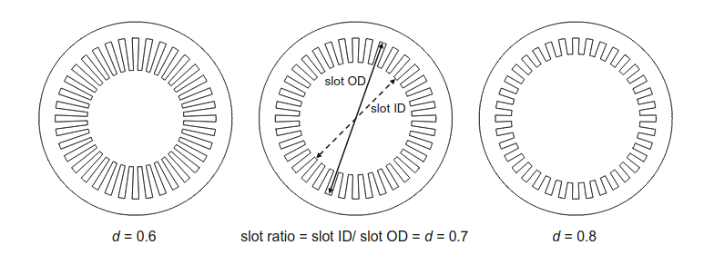


#### Reading Assignment: [The Rediscovery of Synchronous Reluctance and Ferrite Permanent Magnet Motors](https://link.springer.com/book/10.1007%2F978-3-319-32202-5)

---
## How to choose height of the slots?

### For the same outer diameter:
--

### As the slot ratio increases (i.e. higher slots):
--

- ### Electric loading increases (more copper can be fit)
--

- ### Diameter for the rotor gets smaller (less surface area & less torque)

---
## How to choose height of the slots?

### For the same outer diameter:

### As the slot ratio decreases (i.e. shorter slots):
--

- ### Electric loading decreases (less area for copper)
--

- ### Diameter (&rotor volume) gets larger

## There should be an optimum point!

---

## How to choose height of the slots?

### Assume parallel (rectangular) slots: copper area is proportional to slot height:
--

### \\( I \propto (1-d) \\)
--

### Electrical Loading is current per circumference
--

### \\(K_s \propto (1-d)/d \\)
--

### Torque can be expressed as:

### \\( T \propto \sigma . Vol_R\\)
--
\\(\propto [(1-d)/d].d² \propto (1-d).d \\)
---

## How to choose height of the slots?

### Assume parallel (rectangular) slots: copper area is proportional to slot height:

### Torque can be expressed as:

### \\( T \propto \sigma . Vol_R\\)
--
\\(\propto [(1-d)/d].d² \propto (1-d).d \\)

## Optimum point=?
--

## d=0.5

---

## How to choose height of the slots?

### But parallel teeth are more common: Slots gets wider with diameter

### \\( I \propto (1-d²) \\)
--

### Electrical Loading is current per circumference
--

### \\(K_s \propto (1-d²)/d \\)


### Torque can be expressed as:

### \\( T \propto \sigma . Vol_R \; \propto [(1-d²)/d].d² \propto (1-d²).d \\)

### Optimum point= \\(d= 1/\sqrt{3} = 0.58\\)

---

## How to choose height of the slots?

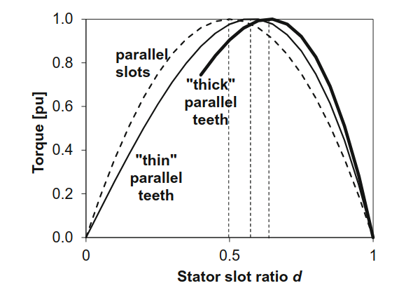

---
# Stator Slot Types:
--
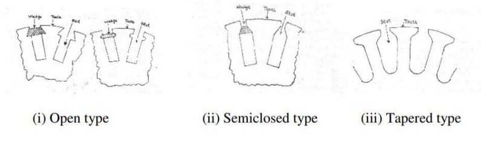
--

### Most Common Types:

- ### Open Slots: Constant width, easy repair and assembly
--

- ### Semi-closed Slots: Difficult to assembly but better magnetic characteristics
--

- ### Tapered Slots: Varying width (constant tooth width)

---
# Stator Slot Types:

### There are several other options. Depending on operating conditions, manufacturing constraints etc.


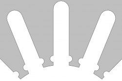

---
# Stator Slot Types:

### There are several other options. Depending on operating conditions, manufacturing constraints etc.

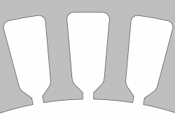
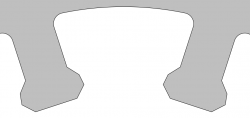
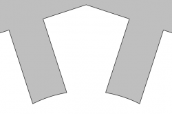

---
# Stator Slot Types:

### There are several other options. Depending on operating conditions, manufacturing constraints etc.

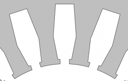
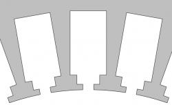
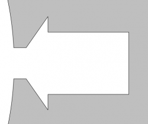


---
# Production of Electric Machines

### [TES Generators and Motors](https://www.youtube.com/watch?v=5Mu42TzHy8M)

### [Induction Motors: Overhauling a Motor](https://www.youtube.com/watch?v=yPvYd03cKJU)

### [Rewinding a Large Motor](https://www.youtube.com/watch?v=_65mXQ-GNVM)

### [Automatic Coil Insertion](https://www.youtube.com/watch?v=Kih3hyl8CUg)

### [E-propulsion System](https://www.youtube.com/watch?v=d5cEIGDg2Co)

### [BMW i-8](https://www.youtube.com/watch?v=oESBbRu32-E)


---
## Case Study: Ferrite vs. NdFeB
--

### Base Design

- ### Di=100mm
- ### L =100mm
- ### Slot Ratio=0.7
- ### Airgap = 1.5mm
- ### Magnet (NdFeB)= 4mm, Brem=1.1T


#### Reading Assignment: [The Rediscovery of Synchronous Reluctance and Ferrite Permanent Magnet Motors](https://link.springer.com/book/10.1007%2F978-3-319-32202-5)

---
## Case Study: Ferrite vs. NdFeB

### Base Design

- ### Current Density = 6.7 A/mm2
- ### Electrical Loading = 30kA/m
- ### Shear Stress = 18 kPa
- ### Output Torque = 28 Nm
- ### Magnet (NdFeB)= 4mm, Brem=1.1T


#### Reading Assignment: [The Rediscovery of Synchronous Reluctance and Ferrite Permanent Magnet Motors](https://link.springer.com/book/10.1007%2F978-3-319-32202-5)

---
### Base Design with NdFeB

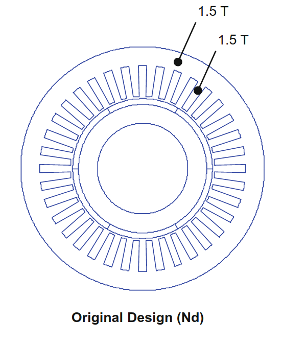

---
### Magnets replaced with Ferrite (Brem=0.4 T)

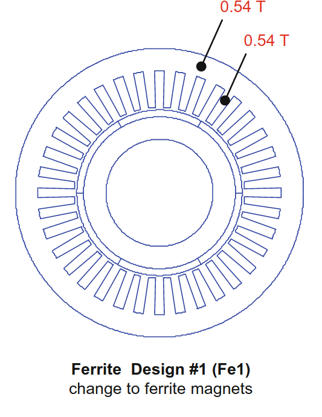

---
### Double Ferrite Thickness (4mm -> 8mm)

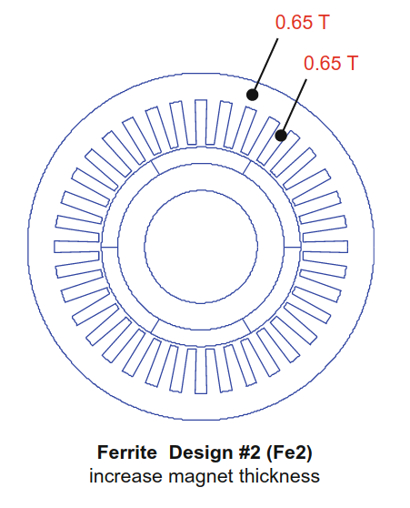

---
### Reduce teeth width until saturation

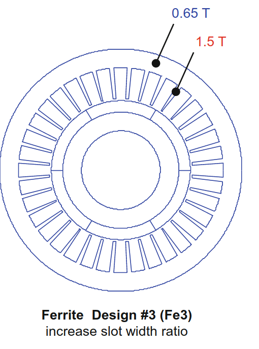

### Electric loading is 157% of the base design

---
### Reduce back-core (yoke) until saturation

### Total volume reduces to 83%.

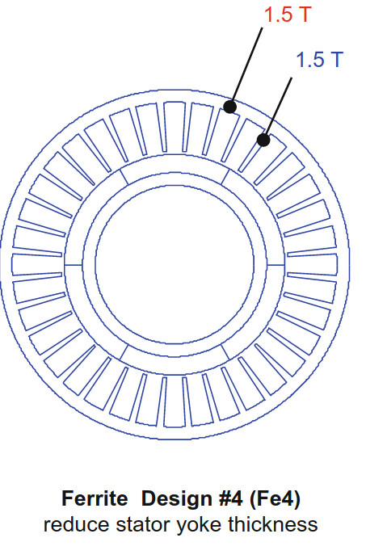

---
### Comparison of Electrical and Magnetic Loadings

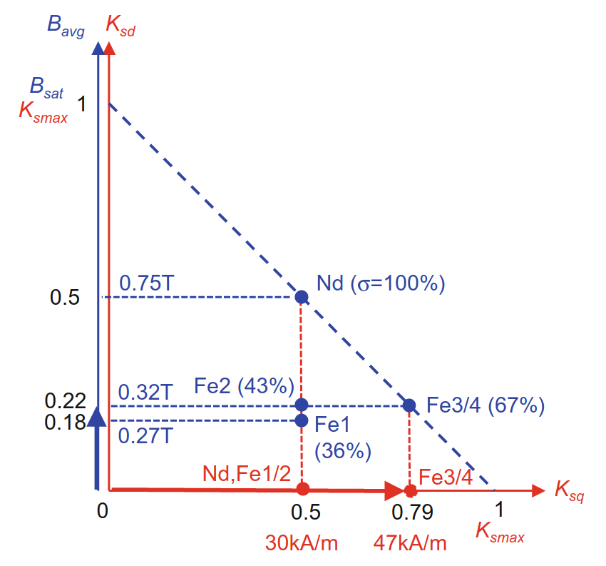

---
# Selection of number of stator slots
--

## Advantages of Low number of slots:

- ### Reduced manufacturing cost
- ### Less space lost due to insulation and slot opening

--

## Disadvantages of low number of slots


- ### Increased leakage inductance
- ### Reduced breakdown torque
- ### Larger MMF harmonics

---
# Selection of number of stator slots

## Advantages of High number of slots:

- ### Reduced tooth pulsation
- ### Higher overload capacity 
- ### Better Cooling
--

## Disadvantages of high number of slots


- ### Increased magnetizing current
- ### Poor Cooling
- ### Difficult manufacturing

---
# Number of Slots vs Winding Factor
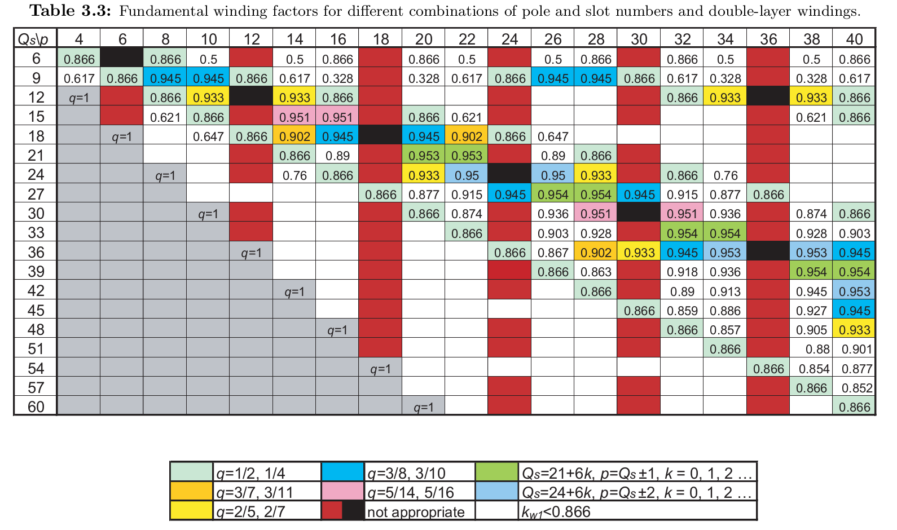


---
# Further Reading

# Selection of Phases - Poles

## T.Miller Electric Machine Design Course, Lecture 10-12

### [Ref](https://www.youtube.com/watch?v=uoJfVMynV44&list=PLR3pRvvCj_Y_jcg_Ia6ARvzefov05c7vf&index=11)
---
## You can download this presentation from: [keysan.me/ee568](http://keysan.me/ee568)


    </textarea>
    <script src="http://gnab.github.io/remark/downloads/remark-latest.min.js" type="text/javascript"></script>
    <script src="https://cdnjs.cloudflare.com/ajax/libs/mathjax/2.7.1/MathJax.js?config=TeX-AMS_HTML&delayStartupUntil=configured" type="text/javascript"></script>
    <script type="text/javascript">
      var slideshow = remark.create({countIncrementalSlides: false});

      // Setup MathJax
      MathJax.Hub.Config({
          tex2jax: {
          skipTags: ['script', 'noscript', 'style', 'textarea', 'pre']
          }
      });
      MathJax.Hub.Queue(function() {
          $(MathJax.Hub.getAllJax()).map(function(index, elem) {
              return(elem.SourceElement());
          }).parent().addClass('has-jax');
      });

      MathJax.Hub.Configured();
    </script>
  </body>
</html>
